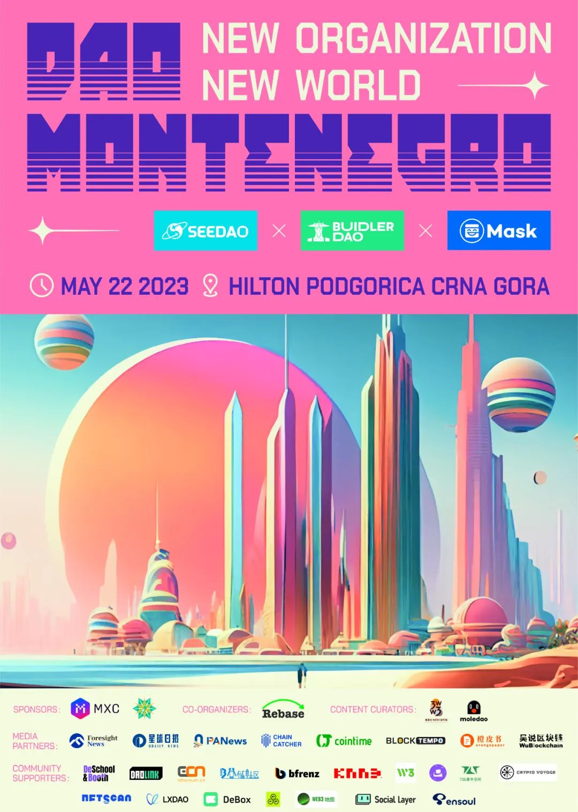

如果今年不去黑山，那你可能会感到遗憾。
就在此刻，全球各地的开发者、DAO Builder & Network State 探索者，正像朝圣一般涌向黑山。
2023年以太坊社区开发大会EDCON（Community Ethereum Development Conference）将于5.19-5.23在黑山举办，Vitalik、Balaji 等重量级嘉宾确认出席。
SeeDAO计划将于5.22在黑山首都举办DAO Conference，探讨全球 DAO/Network State 探索者所关注最前沿的议题，与世界范围内 DAO实践者一起交流经验、共享生态、讨论未来。这次，我们关注的焦点是全球危机下的组织挑战。
那么，如果我们去了黑山，会聊些什么话题呢？
01
DAO黑山：全球危机下的组织挑战
DAO Montenegro
世界秩序正经历着翻天覆地的变革。地缘政治的风云变幻、AI引发的失业危机以及异常脆弱的宏观经济和金融体系，使得普罗大众的生活愈发如履薄冰。对于长时间失业的人群而言，公司制度已无法为他们提供稳定生活的经济保障；对于流离失所的难民来说，国家已变成他们难以重返的家园。
当前的世界已陷入深重的危机。除了上述明显的问题外，科技的进步已到达历史性的临界点，大量的不确定性背后隐藏着人类文明的危险。从原子弹到AGI，再到威胁全人类生存的生化实验，库兹韦尔所预言的人工智能与人脑智能相互兼容、甚至人工智能全面超越人类的“奇点”或许就在不远的将来。
也许有一天，人类终将因科技而灭亡。技术的发展已远远超越了组织制度的演进，那封呼吁停止研发比GPT-4更强大AI的公开信，便是当下的最佳写照。
DAO黑山，到黑山去。让我们在黑山好好探讨这些问题，一起聊聊全球危机下的组织挑战吧！
你愿意一起加入吗？
02
会议主题
DAO Montenegro
01
超人类主义
DAO Montenegro
人的身体是否是可以任由技术支配和修补的机器？
我们是否可能”活到1000岁“，并掌握在现在看来接近于神的算力？
我们可能使用不断跃进的科学技术来增强精神、体力、能力和资质，克服残疾、疾病、痛苦、老化和死亡吗？
让我们讨论AGI、Longevity、Network States、Crypto所一起指向的道路，并思考超人类主义的未来。
02
Public Goods与DeSci
DAO Montenegro
以太坊生态的公共物品现状如何？其募资方式发生了哪些变化？
DeSci（去中心化学术网络）为何在生物学领域获得了快速的进展？未来可能基于区块链形成新的全球学术网络吗？AGI的出现可能加速学术网络的组织形成，并促进其快速发展吗？
我们将邀请Gitcoin、NounsDAO以及DeSci领域的核心KOL，来介绍Public Goods与DeSci领域的最新进展。
03
DAO：一种新的组织结构形式
DAO Montenegro
DAO 是否能够解决由 AI 引起的大规模失业问题，并帮助人们在社会坐标中找到新的价值？
如何连接不同的DAO ，进行跨国、跨领域的资源整合与优化，助力共同愿景的落地、提供更多差异化的服务？
DAO在以太坊、比特币、Cosmos等不同公链生态上分别呈现出怎样的发展趋势？
让我们共同探索地缘政治危机、AI带来的生产力革命下的新型组织方案，并讨论DAO 在不同社会组织中的应用、有效的治理结构和DAO的商业模型。
04
DAO 工具的哲学视角
DAO Montenegro
DAO的发展召唤出了新的DAO工具，而新的DAO工具也塑造了人们对DAO的想象。
在这一部分，我们将讨论DAO的工具集、人工智能对 DAO 工具的影响、Web3应用如何通过DAO实现Mass adoption。我们将重点讨论这些DAO工具构建的产品哲学视角：大家希望借由这些工具创造怎样的组织？
05
数字游民和网络国家
DAO Montenegro
如何通过 Network State 缔造新的秩序，保护我们普通人在地缘冲突的不利影响中获得更多的选择？
如何在数字城邦中促进不同文化、语言和背景的人们的交流与合作，实现真正的地球村？
非洲正在开展的轰轰烈烈的网络国家实践，究竟进展如何？
06
后 GPT 时代的创作者经济
DAO Montenegro
03
活动形式
DAO Montenegro
1.分享与演讲
邀请全球 DAO Builder、Network State 探索者站上舞台分享自己故事、实践与思考。
2.工作坊
基于我们所有人都关心的议题，展开深度探讨、共同产出潜在的解决方案与共识。
3.圆桌对谈
邀约不同受众、地域的顶尖 Builder，对一系列问题展开对谈，尝试对照出 DAO to DAO 建立国际合作的可能。
04
部分已确认嘉宾（持续邀请中）
DAO Montenegro
Shrey Jain
Shrey Jain是Microsoft Research的应用科学家和去中心化社交技术专家，Plural Publics的第一作者，同时也是2023EDCON的受邀嘉宾。
Sheen Hu
Sheen Hu是MXC DAO的CEO。Meta x Connect 是一个公共网络，任何人都能通过将现实世界的资产带入 Web3 来创造价值。自ERC20代币推出以来，MXC已成为全球最大的LPWAN IoT 网络之一，也是在Web3生态中的成功案例。
Catthu
Core at VitaDAO, 掌管长寿奖，越南UWC主席，在Zuzalu组织社区和长寿活动。
Michael
Michael是Humanity的Co-founder。Humanity致力于建立一个覆盖10亿人的健康长寿生活的网络平台，帮助全人类延缓衰老并最大限度地延长健康寿命。
Audrey Tang
Audrey Tang是DRK Lab的Founder ，DRK Lab旨在投资帮扶长期主义的项目，持续Web3青年学者计划，建设汇聚一个长期的、真正关注创新创造力的builder群体。
Han Tang
SeeDAO的Co-Founder。SeeDAO华语世界最有影响力的DAO，目标是建立连接100万人的数字城邦。
黄孙权
台湾大学建筑学博士，策展人，艺术行动者，中国美术学院跨媒艺术学院客座教授，网络社会研究所所长。
刘果
Matters的Co-founder。
Dr.Sun
社会学学者, comupage发起人。
Jake Hartnell
DAO DAO 的Founder，DAO DAO是构建 DAO 的 DAO。为DAO构建强大的开源工具。
Suji
Mask Network的Founder，Mask Network 致力于成为帮助用户从Web 2.0无缝过渡到Web 3.0的门户，在现在的网络上搭建通往新型开放网络的桥梁。
Chika
Afropolitan的Founder，Afropolitan Network 是黑人和非洲人的策展人，其致力于为非洲民众在艺术、金融、科技、健康、能源、体育和媒体方面提供最佳服务。
Aman
DAOStar的Community leader， DAOStar是一个为DAO开发共享元数据标准的组织。
05
更多现场活动介绍
More presentations
WHAT IS EDCON 2023?
划重点：如果日程不变
5.19 是Super Demo！
5.20-5.22，是 EDCON 大会的主场，敬请期待~
5.23 将会是一场借鉴了【联合国大会】的 Community Events，将会有全球代表来到现场共同探讨彼此的命运与 ETH 的未来！
PS：第一天和最后一天的地点在UDG，主会场在Voco Podgorica hotel.
主办方
协办方
赞助方
内容共建
媒体伙伴

社区支持

更多重磅合作伙伴持续更新中...以后续公告为准
有意向参与者可扫码进入DAO黑山微信群了解更多